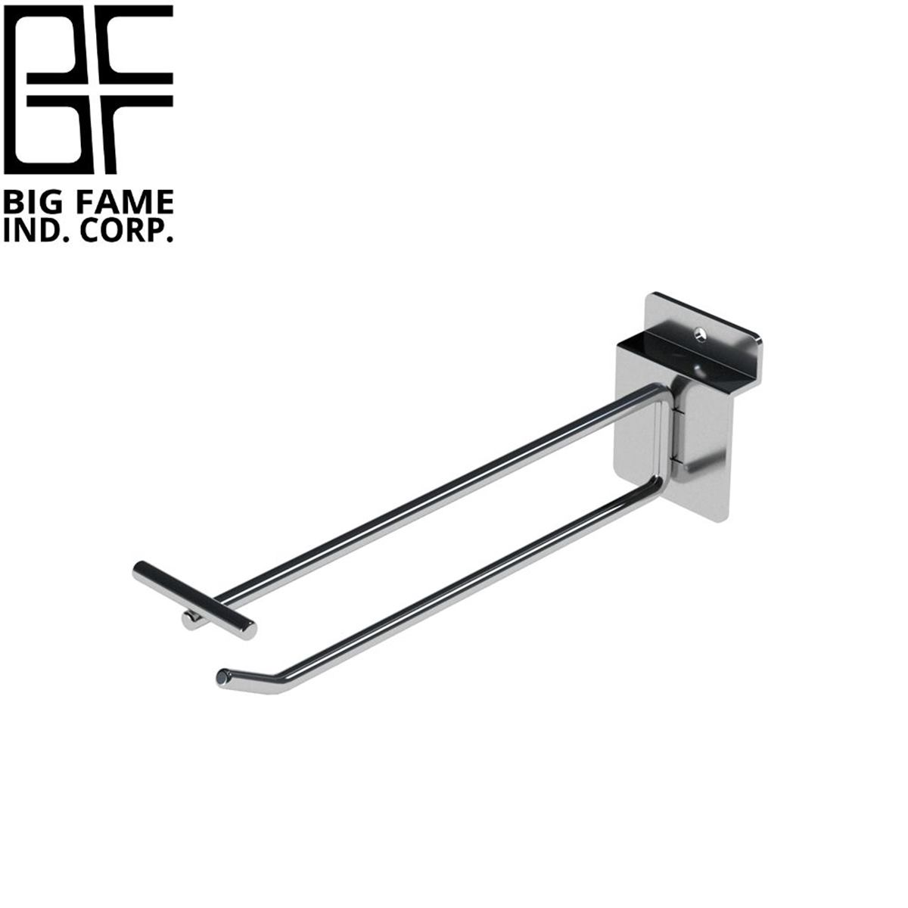
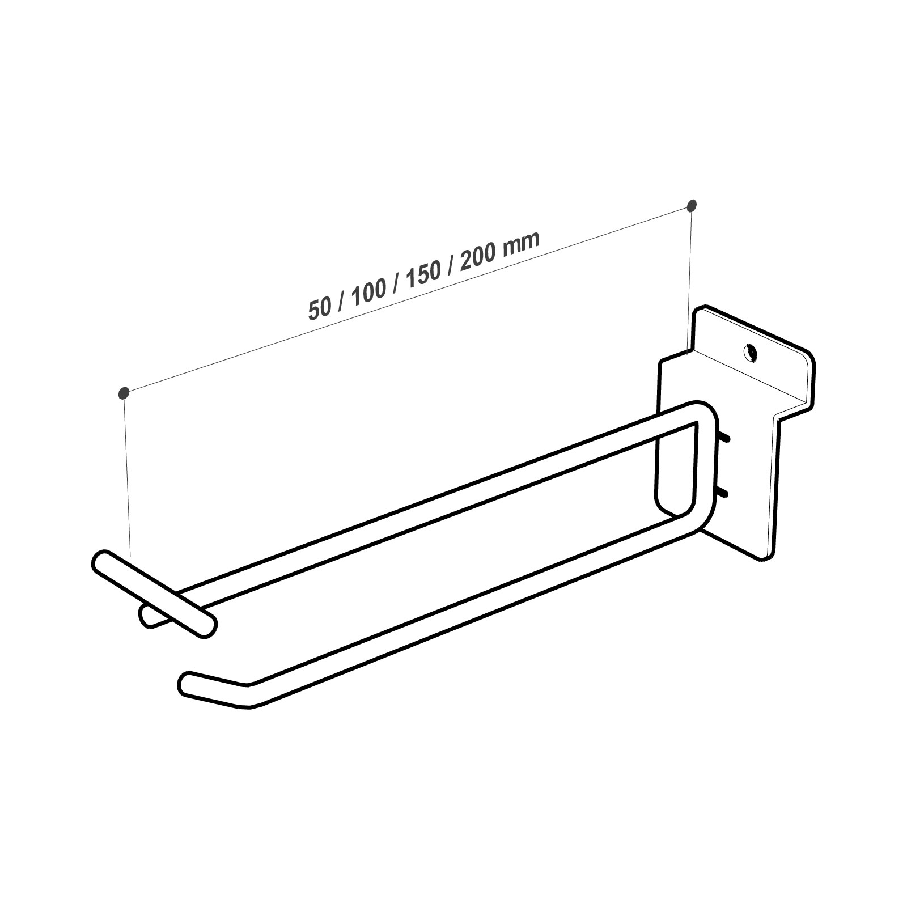

Mounting systems
Source filenames identify PEG, SLW, REC, OVAL, GW and HGW series directions. Confirm compatibility against the backing panel and SKU.
B2B RETAIL DISPLAY HARDWARE
From pegboard and slatwall to retail fixture systems, start with the mounting type, hook length and finish, then confirm the final specification by SKU, drawing and sample.
Ask about display hooksProduct names: Display Hooks／展示掛勾／ディスプレイフック

Source filenames identify PEG, SLW, REC, OVAL, GW and HGW series directions. Confirm compatibility against the backing panel and SKU.
Product Hook.docx records wire-hook directions, hook lengths of 50 / 75 / 100 / 150 / 200 mm and hook diameters of Φ5.0 / Φ6.0 / Φ8.0 / Φ10.0. These are raw document type ranges, not a blanket claim for every current SKU.
Source: Product Hook.docx. Formal material grade, finish, MOQ, lead time and customization scope remain subject to SKU, drawing and project confirmation.
The document also records crossbar sizes of 10×20, 14×24, 20×40 and 15×30 mm, and describes pegboard, slatwall and wire-shelving directions. Confirm compatibility by backing system, SKU, drawing and sample.
The DBTHK001-SLW drawing shows 50 / 100 / 150 / 200 mm lengths. This is evidence for a representative SLW variant, not a blanket claim for every hook.
Source image filenames include BK, CH and WH variants. Exact material, finish and colour code are confirmed by SKU, quotation and sample.

Share pegboard hole spacing, slatwall type, mounting direction and a site photo.
Share hook length, single or double hook, label holder need, finish and estimated quantity.
The raw document supports wire-hook and the dimension directions above; formal material grade, wire diameter, MOQ, lead time, packaging and customization scope require SKU, drawing and sample confirmation.
Related pages: Optical Display Hooks, Anti-theft Display Hooks, Slatwall / Pegboard Accessories, Eyewear Retail Case, Modular 3C Store Case · Automotive parts display rack record · Hair display spinner engineering record
These fields form the shared confirmation frame before a formal quotation. A field becomes a formal specification only when it is supported by the matching SKU, drawing, quotation or sample.
Confirm the store type, backing or mounting system, displayed product and site conditions.
Confirm material grade, colour, finish and appearance against the SKU, drawing, quotation and sample.
Confirm dimensions, wire diameter, board thickness, load or fixing method against the representative drawing and project conditions.
There is no universal MOQ or lead time for every product; confirm by type, quantity, material, finish and project.
Share dimensions, photos, drawings, quantity and use conditions so changes to size, material, finish or structure can be assessed.
Representative images, drawings and cases support initial evaluation; formal PDF, CAD, samples and commercial terms follow the approved version.
Need dimension drawings, CAD, material or specification data? Review technical resources before starting an inquiry. technical-resources
Send the system and project requirements first. Formal PDF, CAD, drawing or sample data is provided according to the approved version and SKU.
This collection page does not publish one universal MOQ or lead time. Both depend on type, quantity, finish and project conditions.
Start with the Optical Display Hooks page and review drawing-supported mounting and display directions, then confirm the backing system, length, finish and quantity.
Share the backing system, pitch or slot spacing, board thickness, hook length, display products and photos. Compatibility and formal specifications require drawing and sample confirmation.
Choose a route: Procurement · Design support · Technical resources